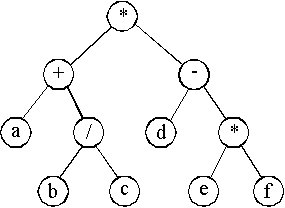

<!doctype html public "-//w3c//dtd html 4.0 transitional//en">
<html>
<head>
   <meta http-equiv="Content-Type" content="text/html; charset=windows-1251">
   <meta name="Author" content="Nikolay Kirov">
   <meta name="GENERATOR" content="Mozilla/4.8 [en] (Win95; U) [Netscape]">
   <title>l25</title>
</head>
<body>

<center>
<h3>
<b>25. Дървета</b></h3></center>
&nbsp; Структура
от данни двоично дърво.
<br>** Определение и свойства на дърво.
<table CELLSPACING=0 CELLPADDING=4 COLS=2 WIDTH="100%" >
<tr>
<td VALIGN=TOP>Ацикличен насочен граф, в който всички върхове без 1 имат
по 1 предшественик, а 1 връх (<i>корен</i>) няма предшественици се нарича
<i>дърво</i>.
От всеки връх има единствен път до корена; броят на върховете по пътя до
корена се нарича <i>ниво</i> на върха. Коренът е от ниво 0.
<i>Листо</i>
се нарича връх без наследници. <i>Поддърво</i> определено от връх се образува
от върхът и всичките му наследници, техните наследници и т.н.</td>

<td ALIGN=CENTER VALIGN=CENTER></td>
</tr>
</table>

<p>** Дефиниция на двоично дърво.
<table CELLSPACING=0 COLS=2 WIDTH="100%" >
<tr>
<td VALIGN=TOP>&nbsp;&nbsp;&nbsp; Дърво, в което броят на наследниците
на върховете е 0, 1 или 2 се нарича двоично дърво. Всеки връх има <i>ляв</i>
и <i>десен</i> наследник (може и празно множество).
<br>&nbsp;&nbsp;&nbsp; Рекурсивно определение на двоично дърво:
<br>&nbsp;&nbsp;&nbsp; Крайно множество от елементи (възли), което е или
празно, или се състои от корен (възел), свързан с две непресичащи се двоични
дървета (поддървета) - ляво и дясно поддърво.</td>

<td ALIGN=CENTER VALIGN=CENTER></td>
</tr>
</table>

<p>&nbsp;&nbsp;&nbsp; Реализация с масив. Двоичното дърво от картинката
може да се опише с 3 успоредни масива - първият масив съдържа данните във
върховете, във вторият масив са индексите (от първия масив) на левите наследници
и в третия масив са индексите на десните наследници.
<table BORDER COLS=11 WIDTH="100%" >
<tr>
<td>[0] a</td>

<td>[1] b</td>

<td>[2] c</td>

<td>[3] d</td>

<td>[4] e</td>

<td>[5] f</td>

<td>[6] g</td>

<td>[7] h</td>

<td>[8] i</td>

<td>[9] j</td>

<td>[10] k</td>
</tr>

<tr>
<td>1</td>

<td>2</td>

<td>9</td>

<td>10</td>

<td>5</td>

<td>-</td>

<td>-</td>

<td>4</td>

<td>-</td>

<td>-</td>

<td>-</td>
</tr>

<tr>
<td>7</td>

<td>-</td>

<td>3</td>

<td>-</td>

<td>6</td>

<td>-</td>

<td>-</td>

<td>9</td>

<td>-</td>

<td>-</td>

<td>-</td>
</tr>
</table>

<p>&nbsp;&nbsp;&nbsp; Реализация с указатели. Всеки връх се предсавя като
структура с данна и два указателя за левия и десния наследници.
<br><b><tt><font color="#000099">struct Node</font></tt></b>
<br><b><tt><font color="#000099">{ int info;</font></tt></b>
<br><b><tt><font color="#000099">&nbsp; Node *pLeft, *pRight;</font></tt></b>
<br><b><tt><font color="#000099">}</font></tt></b>
<p>**&nbsp; Обхождане на структура от данни двоично дърво.
<br>&nbsp;&nbsp;&nbsp; Обхождане на двоично дърво се нарича линейно нареждане
на възлите на дървото. Като използваме рекурсивната същност на двоичното
дърво, обхождаме три елемента - корен, ляво поддърво и дясно поддърво.
В зависимост от реда на обхождане на тези 3 елемента, получаваме и 6 вида
обхождане:
<table CELLSPACING=0 CELLPADDING=4 >
<tr>
<td>- корен, ляво, дясно</td>

<td>(клд),</td>

<td>низходящо,</td>

<td>preorder</td>
</tr>

<tr>
<td>- ляво, корен, дясно&nbsp;</td>

<td>(лкд),</td>

<td>смесено,</td>

<td>inorder</td>
</tr>

<tr>
<td>- ляво, дясно, корен</td>

<td>(лдк),</td>

<td>възходящо,</td>

<td>postorder</td>
</tr>
</table>
и още 3 вида, симетрични на описаните относно ляво-дясно.
<br>&nbsp;
<table CELLSPACING=0 COLS=2 WIDTH="100%" >
<tr>
<td>&nbsp;&nbsp; Пример. Аритметични изрази и двоични дървета. Листата
са имена на променливи и константи, другите възли са аритметични операции.
<br>&nbsp;&nbsp; За аритметичния израз:
<center><b><tt>(a+b/c)*(d-e*f)</tt></b></center>
получаваме следните линейни подреждания на върховете:
<br>&nbsp;&nbsp; 1) preorder (клд) - <b><tt>*+a/bc-d*ef</tt></b>
<br>&nbsp;&nbsp; 2) inorder&nbsp; (лкд)&nbsp; - <b><tt>a+b/c*d-e*f</tt></b>
<br>&nbsp;&nbsp; 3) postorder (лдк) - <b><tt>abc/+def*-*</tt></b></td>

<td ALIGN=CENTER VALIGN=CENTER></td>
</tr>
</table>

<p>** Дърво за двоично търсене.
<br>&nbsp;&nbsp;&nbsp; Дърво за двоично търсене се нарича двоично дърво
със следните свойства:
<br>&nbsp;- във всеки връх на дървото има записана данна, с ключ за търсене;
<br>&nbsp;- ключът във на всеки връх е едновременно по-голям от всички
ключове в неговото ляво поддърво и по-малък от всички ключове в негото
дясно поддърво.
<br>&nbsp;&nbsp;&nbsp; Търсенето в такова дърво изисква на-много толкова
проверки, колкото е най-голямото ниво на върховете му. Затова сложността
на алгоритъма за търсене в двоично дърво с <i>n</i> върха е <i>O</i>(log
<i>n</i>).
<br>&nbsp;&nbsp;&nbsp; Пример. Построяване на дърво за двоично търсене
и обхождане на дървото.
<br><b><tt><font color="#000099">// bstree.cpp</font></tt></b>
<br><b><tt><font color="#000099">#include &lt;iostream></font></tt></b>
<br><b><tt><font color="#000099">using namespace std;</font></tt></b>
<p><b><tt><font color="#000099">struct Node</font></tt></b>
<br><b><tt><font color="#000099">{ int info;</font></tt></b>
<br><b><tt><font color="#000099">&nbsp; Node *pLeft, *pRight;</font></tt></b>
<br><b><tt><font color="#000099">};</font></tt></b>
<br><b><tt><font color="#000099">class Tree {</font></tt></b>
<br><b><tt><font color="#000099">public:</font></tt></b>
<br><b><tt><font color="#000099">&nbsp;&nbsp; Tree();</font></tt></b>
<br><b><tt><font color="#000099">&nbsp;&nbsp; void print() const { pr(root);
}</font></tt></b>
<br><b><tt><font color="#000099">private:</font></tt></b>
<br><b><tt><font color="#000099">&nbsp;&nbsp; Node *root;</font></tt></b>
<br><b><tt><font color="#000099">&nbsp;&nbsp; void addNode(int, Node* &amp;);</font></tt></b>
<br><b><tt><font color="#000099">&nbsp;&nbsp; void pr(const Node *) const;</font></tt></b>
<br><b><tt><font color="#000099">};</font></tt></b>
<br><b><tt><font color="#000099">Tree::Tree()</font></tt></b>
<br><b><tt><font color="#000099">{ root = NULL;</font></tt></b>
<br><b><tt><font color="#000099">&nbsp; int x;</font></tt></b>
<br><b><tt><font color="#000099">&nbsp; while (cin >> x, !cin.fail()) addNode(x,
root);</font></tt></b>
<br><b><tt><font color="#000099">}</font></tt></b>
<br><b><tt><font color="#000099">void Tree::addNode(int x, Node* &amp;p)</font></tt></b>
<br><b><tt><font color="#000099">{ if (p == NULL)</font></tt></b>
<br><b><tt><font color="#000099">&nbsp; { p = new Node;</font></tt></b>
<br><b><tt><font color="#000099">&nbsp;&nbsp;&nbsp; p->info = x;</font></tt></b>
<br><b><tt><font color="#000099">&nbsp;&nbsp;&nbsp; p->pLeft = p->pRight
= NULL;</font></tt></b>
<br><b><tt><font color="#000099">&nbsp; }</font></tt></b>
<br><b><tt><font color="#000099">&nbsp; else addNode(x, x &lt; p->info
? p->pLeft : p->pRight);</font></tt></b>
<br><b><tt><font color="#000099">}</font></tt></b>
<br><b><tt><font color="#000099">void Tree::pr(const Node *p)const</font></tt></b>
<br><b><tt><font color="#000099">{ if (p)</font></tt></b>
<br><b><tt><font color="#000099">&nbsp; { pr(p->pLeft);</font></tt></b>
<br><b><tt><font color="#000099">&nbsp;&nbsp;&nbsp; cout &lt;&lt; p->info
&lt;&lt; " ";</font></tt></b>
<br><b><tt><font color="#000099">&nbsp;&nbsp;&nbsp; pr(p->pRight);</font></tt></b>
<br><b><tt><font color="#000099">&nbsp; }</font></tt></b>
<br><b><tt><font color="#000099">}</font></tt></b>
<br><b><tt><font color="#000099">int main()</font></tt></b>
<br><b><tt><font color="#000099">{ cout &lt;&lt; "Enter some integers to
be placed in a binary tree:\n";</font></tt></b>
<br><b><tt><font color="#000099">&nbsp; Tree t;</font></tt></b>
<br><b><tt><font color="#000099">&nbsp; cout &lt;&lt; "Tree contents (in
ascending order):\n";</font></tt></b>
<br><b><tt><font color="#000099">&nbsp; t.print();</font></tt></b>
<br><b><tt><font color="#000099">&nbsp; cout &lt;&lt; endl;</font></tt></b>
<br><b><tt><font color="#000099">&nbsp; return 0;</font></tt></b>
<br><b><tt><font color="#000099">}</font></tt></b>
<table BORDER CELLPADDING=4 WIDTH="100%" >
<tr>
<td><b><tt><font color="#993300">Enter some integers to be placed in a
binary tree:</font></tt></b>
<br><b><tt><font color="#006600">5 34 1 21 19 32 50 43 31</font></tt></b>
<br><b><tt><font color="#993300"></font></tt></b>
<br><b><tt><font color="#993300">Tree contents (in ascending order):</font></tt></b>
<br><b><tt><font color="#993300">1 5 19 21 31 32 34 43 50&nbsp;</font></tt></b></td>
</tr>
</table>

<table CELLSPACING=0 COLS=2 WIDTH="100%" >
<tr>
<td>&nbsp;&nbsp;&nbsp; Това е дървото за двоично търсене, получено с данни
от програмата.&nbsp;
<br>1) Търсим числото 19. Тръгваме от корена.&nbsp;
<br>19 > 5 - наляво
<br>19 &lt; 34 - надясно
<br>19 &lt; 21 - надясно
<br>19 = 19&nbsp;
<br>2) Търсим числото 35. Тръгваме от корена.&nbsp;
<br>35 > 5 - наляво
<br>35 > 34 - наляво
<br>35 &lt; 50 - надясно
<br>листо 43 != 35 - няма такова число&nbsp;</td>

<td ALIGN=CENTER VALIGN=CENTER></td>
</tr>
</table>

<hr WIDTH="100%">
<br> Кодиране на
Хъфман.
<br>&nbsp;&nbsp;&nbsp; Едно от приложенията на двоичните дървета е в компресирането
на данни. ASCII кода на всеки символ ни дава точно 8 бита за записване
(и съхраняване) на символа. Този код е пример за кодиране с фиксирана дължина
на кода. Идеята на Хъфман е да се използва код с променлива дължина, като
често срещащите се символи се кодирит с по-къс код, докато рядко срещащите
се символи - с по-дълъг код.
<br>** Алгоритъм на Хъфман за получаване на оптимално двоични дърво.
<br>&nbsp;1. Всички срещащи се в текста символи са листа на дървото с тегла
броя на срещанията на символа в текста;
<br>&nbsp;2. Всички други възли на дървото имат тегла 0;
<br>&nbsp;3. В началото разглеждаме всички листа като отделни дървета (Хъфманова
гора);
<br>&nbsp;4. Намираме две дървета с най-малки претеглени дължини;
<br>&nbsp;5. Построяваме ново дърво, като създаваме нов възел (корен) с
наследници - двете поддървета;
<br>&nbsp;6. Пресмятаме претеглената дължина на новото дърво (сума от претеглените
дължини на двете поддървета);
<br>&nbsp;7. Отиваме на 4., ако имаме поне 2 дървета.
<br>&nbsp;&nbsp;&nbsp; Кодирането на символите от текста (листа на дървото)
се получава от единствения път до корена. Проследяваме пътя от корена до
върха и при отиване в ляв наследник кодираме с 0, а при отиване на десен
наследник - с 1. Кодираният текст получаваме, като редица от кодовете на
отделните символи.
<br>&nbsp;&nbsp;&nbsp; За да можем да декодираме текста, е необходимо да
имаме кодирания текст и Хъфмановото дърво, с което са кодирани символите
на текста. Движим се от корена на дървото до достигане на листо - наляво
или надясно в зависимост от прочетения код. Записваме символа от листото
и тръгваме пак от корена.
<p>** Пример за кодиране на следния текст: <b><font color="#CC0000">програмиране
и структури от данни</font></b>
<br>&nbsp;&nbsp;&nbsp; Броим честотите на срещане на буквите от текста:
<table BORDER CELLSPACING=0 CELLPADDING=4 COLS=15 WIDTH="100%" >
<tr>
<td>п</td>

<td>р</td>

<td>о</td>

<td>г</td>

<td>а</td>

<td>м</td>

<td>и</td>

<td>н</td>

<td>е</td>

<td></td>

<td>с</td>

<td>т</td>

<td>у</td>

<td>к</td>

<td>д</td>
</tr>

<tr>
<td>1</td>

<td>5</td>

<td>2</td>

<td>1</td>

<td>3</td>

<td>1</td>

<td>4</td>

<td>3</td>

<td>1</td>

<td>4</td>

<td>1</td>

<td>2</td>

<td>2</td>

<td>1</td>

<td>1</td>
</tr>
</table>

<br>&nbsp;
<table CELLSPACING=0 COLS=2 WIDTH="100%" >
<tr>
<td VALIGN=TOP WIDTH="30%">&nbsp;&nbsp;&nbsp; Построяваме едно оптимално
дърво. То не е единствено, защото в стъпка 4 от алгоритъма избираме две
дървета с най-малки претеглени дължини, но може да има още дървета със
същите претеглени дължини, т.е. изборът не е еднозначен.</td>

<td ALIGN=CENTER VALIGN=CENTER></td>
</tr>
</table>

<p>&nbsp;&nbsp;&nbsp; Кодиране на буквите от текста в съответствие с построеното
дърво:
<table BORDER CELLSPACING=0 CELLPADDING=4 COLS=15 WIDTH="100%" >
<tr>
<td>п</td>

<td>р</td>

<td>о</td>

<td>г</td>

<td>а</td>

<td>м</td>

<td>и</td>

<td>н</td>

<td>е</td>

<td></td>

<td>с</td>

<td>т</td>

<td>у</td>

<td>к</td>

<td>д</td>
</tr>

<tr>
<td>1</td>

<td>5</td>

<td>2</td>

<td>1</td>

<td>3</td>

<td>1</td>

<td>4</td>

<td>3</td>

<td>1</td>

<td>4</td>

<td>1</td>

<td>2</td>

<td>2</td>

<td>1</td>

<td>1</td>
</tr>

<tr>
<td>00100</td>

<td>110</td>

<td>0011</td>

<td>00101</td>

<td>010</td>

<td>10100</td>

<td>100</td>

<td>011</td>

<td>10101</td>

<td>000</td>

<td>111000</td>

<td>1011</td>

<td>1111</td>

<td>111001</td>

<td>11101</td>
</tr>
</table>

<p>Кодиране на целия текст - буква по буква (дължина 121 бита).
<table BORDER CELLSPACING=0 >
<tr>
<td>п</td>

<td>р</td>

<td>о</td>

<td>г</td>

<td>р</td>

<td>а</td>

<td>м</td>

<td>и</td>

<td>р</td>

<td>а</td>

<td>н</td>

<td>е</td>

<td>&nbsp;</td>

<td>и</td>

<td>&nbsp;</td>
</tr>

<tr>
<td>00100</td>

<td>110</td>

<td>001</td>

<td>00101</td>

<td>110</td>

<td>010</td>

<td>10100</td>

<td>100</td>

<td>110</td>

<td>010</td>

<td>011</td>

<td>10101</td>

<td>000</td>

<td>100</td>

<td>000</td>
</tr>

<tr>
<td>5</td>

<td>8</td>

<td>11</td>

<td>16</td>

<td>19</td>

<td>22</td>

<td>27</td>

<td>30</td>

<td>33</td>

<td>36</td>

<td>39</td>

<td>44</td>

<td>47</td>

<td>50</td>

<td>53</td>
</tr>
</table>

<table BORDER CELLSPACING=0 >
<tr>
<td>с</td>

<td>т</td>

<td>р</td>

<td>у</td>

<td>к</td>

<td>т</td>

<td>у</td>

<td>р</td>

<td>и</td>

<td>&nbsp;</td>

<td>о</td>

<td>т</td>

<td>&nbsp;</td>

<td>д</td>

<td>а</td>

<td>н</td>

<td>н</td>

<td>и</td>
</tr>

<tr>
<td>111000</td>

<td>1011</td>

<td>110</td>

<td>1111</td>

<td>111001</td>

<td>1011</td>

<td>1111</td>

<td>110</td>

<td>100</td>

<td>000</td>

<td>0011</td>

<td>1011</td>

<td>000</td>

<td>11101</td>

<td>010</td>

<td>011</td>

<td>011</td>

<td>100</td>
</tr>

<tr>
<td>59</td>

<td>63</td>

<td>66</td>

<td>70</td>

<td>76</td>

<td>80</td>

<td>84</td>

<td>87</td>

<td>90</td>

<td>93</td>

<td>97</td>

<td>101</td>

<td>104</td>

<td>109</td>

<td>112</td>

<td>115</td>

<td>118</td>

<td>121</td>
</tr>
</table>

<p>Код на Хъфман за: <b><tt><font color="#CC0000">програмиране и структури
от данни</font></tt></b>
<br><b><tt>00100110001001011100101010010011001001110101000100000</tt></b>
<br><b><tt>11100010111101111111001101111111101000000011101100011101010011100</tt></b>
<p>Декодиране на текста.
<br>корен - 0 наляво - 0 наляво - 1 надясно - 0 наляво - 0 наляво - листо
п
<br>корен - 1 надясно - 1 надясно - 0 наляво - листо р
<br>корен - 0 наляво и т.н.
<p>** Програма за построяване на оптимално двоично дърво по алгоритъма
на Хъфман и получаване на кодовете на буквите.
<br><b><tt><font color="#000099">// huffman.cpp</font></tt></b>
<br><b><tt><font color="#000099">/* за компилатор Borland C++3.1 */</font></tt></b>
<br><b><tt><font color="#000099">#include &lt;iostream.h></font></tt></b>
<br><b><tt><font color="#000099">#include &lt;string.h></font></tt></b>
<p><b><tt><font color="#000099">typedef unsigned char byte;</font></tt></b>
<br><b><tt><font color="#000099">/* кодировка Windows-1251 */</font></tt></b>
<br><b><tt><font color="#000099">byte text[] = "програмиране и структури
от данни";</font></tt></b>
<br><b><tt><font color="#000099">/* кодировка ДОС */</font></tt></b>
<br><b><tt><font color="#000099">// byte text[] = "Ї°®Ј° ¬Ё° ­Ґ Ё ±І°іЄІі°Ё
®І ¤ ­­Ё";</font></tt></b>
<br><b><tt><font color="#000099">int text_len;</font></tt></b>
<p><b><tt><font color="#000099">struct Huf {</font></tt></b>
<br><b><tt><font color="#000099">&nbsp;&nbsp; byte id;</font></tt></b>
<br><b><tt><font color="#000099">&nbsp;&nbsp; int wh;</font></tt></b>
<br><b><tt><font color="#000099">&nbsp;&nbsp; Huf *left, *right;</font></tt></b>
<br><b><tt><font color="#000099">};</font></tt></b>
<p><b><tt><font color="#000099">struct List {</font></tt></b>
<br><b><tt><font color="#000099">&nbsp;&nbsp; List *next;</font></tt></b>
<br><b><tt><font color="#000099">&nbsp;&nbsp; Huf *tree;</font></tt></b>
<br><b><tt><font color="#000099">};</font></tt></b>
<p><b><tt><font color="#000099">List *head;</font></tt></b>
<br><b><tt><font color="#000099">char code[256];</font></tt></b>
<p><b><tt><font color="#000099">void createList();</font></tt></b>
<br><b><tt><font color="#000099">void writeList();</font></tt></b>
<br><b><tt><font color="#000099">void delList(List *);</font></tt></b>
<br><b><tt><font color="#000099">void addList(Huf *);</font></tt></b>
<br><b><tt><font color="#000099">Huf *findDels();</font></tt></b>
<br><b><tt><font color="#000099">void createTree();</font></tt></b>
<br><b><tt><font color="#000099">void rlrootTree(Huf *, unsigned);</font></tt></b>
<p><b><tt><font color="#000099">int main()</font></tt></b>
<br><b><tt><font color="#000099">{ text_len = strlen(text);</font></tt></b>
<br><b><tt><font color="#000099">&nbsp; createList();</font></tt></b>
<br><b><tt><font color="#000099">&nbsp; writeList();</font></tt></b>
<br><b><tt><font color="#000099">&nbsp; createTree();</font></tt></b>
<br><b><tt><font color="#000099">&nbsp; cout &lt;&lt; "writeCodes\n";</font></tt></b>
<br><b><tt><font color="#000099">&nbsp; rlrootTree(head->tree, 0);</font></tt></b>
<br><b><tt><font color="#000099">&nbsp; cout &lt;&lt; endl;</font></tt></b>
<br><b><tt><font color="#000099">&nbsp; return 0;</font></tt></b>
<br><b><tt><font color="#000099">}</font></tt></b><b><tt><font color="#000099"></font></tt></b>
<p><b><tt><font color="#000099">void createList()</font></tt></b>
<br><b><tt><font color="#000099">{ int i;</font></tt></b>
<br><b><tt><font color="#000099">&nbsp; int ch[256] = {0};</font></tt></b>
<br><b><tt><font color="#000099">&nbsp; for (i=0; i&lt;text_len; i++) ch[text[i]]++;</font></tt></b>
<br><b><tt><font color="#000099">&nbsp; List *l;</font></tt></b>
<br><b><tt><font color="#000099">&nbsp; Huf *h;</font></tt></b>
<br><b><tt><font color="#000099">&nbsp; head = 0;</font></tt></b>
<br><b><tt><font color="#000099">&nbsp; for (i=0; i&lt;255; i++) if (ch[i]>0)</font></tt></b>
<br><b><tt><font color="#000099">&nbsp; { h = new Huf;</font></tt></b>
<br><b><tt><font color="#000099">&nbsp;&nbsp;&nbsp; h->id = i; h->wh =
ch[i];</font></tt></b>
<br><b><tt><font color="#000099">&nbsp;&nbsp;&nbsp; h->left = 0; h->right
= 0;</font></tt></b>
<br><b><tt><font color="#000099">&nbsp;&nbsp;&nbsp; l = new List;</font></tt></b>
<br><b><tt><font color="#000099">&nbsp;&nbsp;&nbsp; l->tree = h;</font></tt></b>
<br><b><tt><font color="#000099">&nbsp;&nbsp;&nbsp; l->next = head; head
= l;</font></tt></b>
<br><b><tt><font color="#000099">&nbsp; }</font></tt></b>
<br><b><tt><font color="#000099">}</font></tt></b>
<p><b><tt><font color="#000099">void writeList()</font></tt></b>
<br><b><tt><font color="#000099">{ cout &lt;&lt; "writeList\n";</font></tt></b>
<br><b><tt><font color="#000099">&nbsp; List *l = head;</font></tt></b>
<br><b><tt><font color="#000099">&nbsp; while (l)</font></tt></b>
<br><b><tt><font color="#000099">&nbsp; { cout &lt;&lt; (l->tree)->id &lt;&lt;
" ";</font></tt></b>
<br><b><tt><font color="#000099">&nbsp;&nbsp;&nbsp; l = l->next;</font></tt></b>
<br><b><tt><font color="#000099">&nbsp; }</font></tt></b>
<br><b><tt><font color="#000099">&nbsp; cout &lt;&lt; endl;</font></tt></b>
<br><b><tt><font color="#000099">&nbsp; l = head;</font></tt></b>
<br><b><tt><font color="#000099">&nbsp; while (l)</font></tt></b>
<br><b><tt><font color="#000099">&nbsp; { cout &lt;&lt; (l->tree)->wh &lt;&lt;
" ";</font></tt></b>
<br><b><tt><font color="#000099">&nbsp;&nbsp;&nbsp; l = l->next;</font></tt></b>
<br><b><tt><font color="#000099">&nbsp; }</font></tt></b>
<br><b><tt><font color="#000099">&nbsp; cout &lt;&lt; endl;</font></tt></b>
<br><b><tt><font color="#000099">}</font></tt></b>
<p><b><tt><font color="#000099">void delList(List *l)</font></tt></b>
<br><b><tt><font color="#000099">{ List *lp, *lc;</font></tt></b>
<br><b><tt><font color="#000099">&nbsp; if (l==head) { head=l->next; delete
l; }</font></tt></b>
<br><b><tt><font color="#000099">&nbsp; else</font></tt></b>
<br><b><tt><font color="#000099">&nbsp; { lp = head; lc = lp->next;</font></tt></b>
<br><b><tt><font color="#000099">&nbsp;&nbsp; while (lc!=l) { lp = lc;
lc = lc->next; }</font></tt></b>
<br><b><tt><font color="#000099">&nbsp;&nbsp; lp->next = lc->next; delete
lc;</font></tt></b>
<br><b><tt><font color="#000099">&nbsp; }</font></tt></b>
<br><b><tt><font color="#000099">}</font></tt></b>
<p><b><tt><font color="#000099">void addList(Huf *h)</font></tt></b>
<br><b><tt><font color="#000099">{ List *l = new List;</font></tt></b>
<br><b><tt><font color="#000099">&nbsp; l->tree = h;</font></tt></b>
<br><b><tt><font color="#000099">&nbsp; l->next = head;</font></tt></b>
<br><b><tt><font color="#000099">&nbsp; head = l;</font></tt></b>
<br><b><tt><font color="#000099">}</font></tt></b>
<p><b><tt><font color="#000099">Huf *findDels()</font></tt></b>
<br><b><tt><font color="#000099">{ List *l = head, *sm = head;</font></tt></b>
<br><b><tt><font color="#000099">&nbsp; Huf *h;</font></tt></b>
<br><b><tt><font color="#000099">&nbsp; while (l)</font></tt></b>
<br><b><tt><font color="#000099">&nbsp; { if ((l->tree)->wh &lt; (sm->tree)->wh)
sm = l;</font></tt></b>
<br><b><tt><font color="#000099">&nbsp;&nbsp; l = l->next;</font></tt></b>
<br><b><tt><font color="#000099">&nbsp; }</font></tt></b>
<br><b><tt><font color="#000099">&nbsp; h = sm->tree;</font></tt></b>
<br><b><tt><font color="#000099">&nbsp; delList(sm);</font></tt></b>
<br><b><tt><font color="#000099">&nbsp; return h;</font></tt></b>
<br><b><tt><font color="#000099">}</font></tt></b>
<p><b><tt><font color="#000099">void createTree()</font></tt></b>
<br><b><tt><font color="#000099">{ Huf *h, *h1, *h2;</font></tt></b>
<br><b><tt><font color="#000099">&nbsp; while (head->next)</font></tt></b>
<br><b><tt><font color="#000099">&nbsp; { h1 = findDels();</font></tt></b>
<br><b><tt><font color="#000099">&nbsp;&nbsp;&nbsp; h2 = findDels();</font></tt></b>
<br><b><tt><font color="#000099">&nbsp;&nbsp;&nbsp; h = new Huf;</font></tt></b>
<br><b><tt><font color="#000099">&nbsp;&nbsp;&nbsp; h->id = ' '; h->wh
= h1->wh + h2->wh;</font></tt></b>
<br><b><tt><font color="#000099">&nbsp;&nbsp;&nbsp; h->left = h1; h->right
= h2;</font></tt></b>
<br><b><tt><font color="#000099">&nbsp;&nbsp;&nbsp; addList(h);</font></tt></b>
<br><b><tt><font color="#000099">&nbsp; }</font></tt></b>
<br><b><tt><font color="#000099">}</font></tt></b>
<p><b><tt><font color="#000099">void rlrootTree(Huf *h, unsigned index)</font></tt></b>
<br><b><tt><font color="#000099">{ if (h)</font></tt></b>
<br><b><tt><font color="#000099">&nbsp; { code[index] = '0';</font></tt></b>
<br><b><tt><font color="#000099">&nbsp;&nbsp;&nbsp; rlrootTree(h->right,
index+1);</font></tt></b>
<br><b><tt><font color="#000099">&nbsp;&nbsp;&nbsp; if (h->left == 0)</font></tt></b>
<br><b><tt><font color="#000099">&nbsp;&nbsp;&nbsp; { code[index] = '\0';</font></tt></b>
<br><b><tt><font color="#000099">&nbsp;&nbsp;&nbsp;&nbsp;&nbsp; cout &lt;&lt;
h->id &lt;&lt; "->" &lt;&lt; code &lt;&lt; " ";</font></tt></b>
<br><b><tt><font color="#000099">&nbsp;&nbsp;&nbsp; }</font></tt></b>
<br><b><tt><font color="#000099">&nbsp;&nbsp;&nbsp; code[index] = '1';</font></tt></b>
<br><b><tt><font color="#000099">&nbsp;&nbsp;&nbsp; rlrootTree(h->left,
index+1);</font></tt></b>
<br><b><tt><font color="#000099">&nbsp; }</font></tt></b>
<br><b><tt><font color="#000099">}</font></tt></b>
<table BORDER CELLPADDING=4 COLS=1 WIDTH="100%" >
<tr>
<td><b><tt><font color="#993300">writeList</font></tt></b>
<br><b><tt><font color="#993300">у т с р п о н м к и е д г а&nbsp;</font></tt></b>
<br><b><tt><font color="#993300">2 3 1 5 1 2 3 1 1 4 1 1 1 3 4&nbsp;</font></tt></b>
<br><b><tt><font color="#993300">writeCodes</font></tt></b>
<br><b><tt><font color="#993300">а->0000 н->0001 р->001 п->01000 с->01001
к->01010 м->01011 о->0110 у->0111&nbsp; ->100 и->101 т->110 д->11100 е->11101
г->1111&nbsp;</font></tt></b></td>
</tr>
</table>

<p>&nbsp;&nbsp;&nbsp; Програмата построи друго оптимално дърво, различно
от нарисуваното по-горе.
<br>
<hr WIDTH="100%">
</body>
</html>
